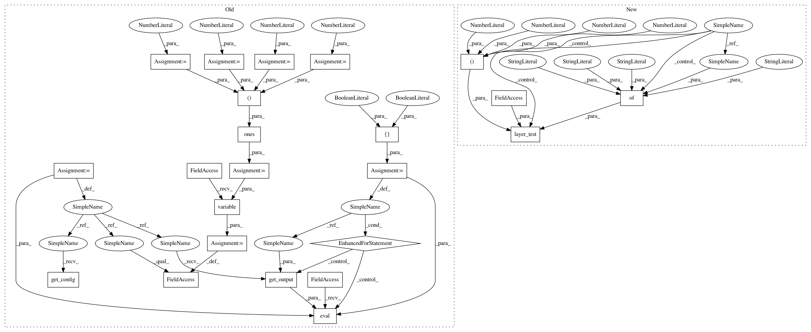

efe5916109e220a429a2cff110edb952d747466f,tests/keras/layers/test_convolutional.py,,test_maxpooling_3d,#,255
Before Change
@pytest.mark.skipif(K._BACKEND != "theano", reason="Requires Theano backend")
def test_maxpooling_3d():
nb_samples = 9
stack_size = 7
input_len_dim1 = 10
input_len_dim2 = 11
input_len_dim3 = 12
pool_size = (3, 3, 3)
input = np.ones((nb_samples, stack_size, input_len_dim1,
input_len_dim2, input_len_dim3))
for strides in [(1, 1, 1), (2, 2, 2)]:
layer = convolutional.MaxPooling3D(strides=strides,
border_mode="valid",
pool_size=pool_size)
layer.input = K.variable(input)
for train in [True, False]:
K.eval(layer.get_output(train))
layer.get_config()
@pytest.mark.skipif(K._BACKEND != "theano", reason="Requires Theano backend")
def test_averagepooling_3d():
After Change
pool_size = (3, 3, 3)
for strides in [(1, 1, 1), (2, 2, 2)]:
layer_test(convolutional.MaxPooling3D,
kwargs={"strides": strides,
"border_mode": "valid",
"pool_size": pool_size},
input_shape=(3, 4, 11, 12, 10))
@pytest.mark.skipif(K._BACKEND != "theano", reason="Requires Theano backend")
def test_averagepooling_3d():
In pattern: SUPERPATTERN
Frequency: 3
Non-data size: 23
Instances
Project Name: keras-team/keras
Commit Name: efe5916109e220a429a2cff110edb952d747466f
Time: 2016-04-01
Author: francois.chollet@gmail.com
File Name: tests/keras/layers/test_convolutional.py
Class Name:
Method Name: test_maxpooling_3d
Project Name: keras-team/keras
Commit Name: efe5916109e220a429a2cff110edb952d747466f
Time: 2016-04-01
Author: francois.chollet@gmail.com
File Name: tests/keras/layers/test_convolutional.py
Class Name:
Method Name: test_maxpooling_3d
Project Name: keras-team/keras
Commit Name: efe5916109e220a429a2cff110edb952d747466f
Time: 2016-04-01
Author: francois.chollet@gmail.com
File Name: tests/keras/layers/test_convolutional.py
Class Name:
Method Name: test_averagepooling_3d
Project Name: keras-team/keras
Commit Name: efe5916109e220a429a2cff110edb952d747466f
Time: 2016-04-01
Author: francois.chollet@gmail.com
File Name: tests/keras/layers/test_convolutional.py
Class Name:
Method Name: test_maxpooling_2d